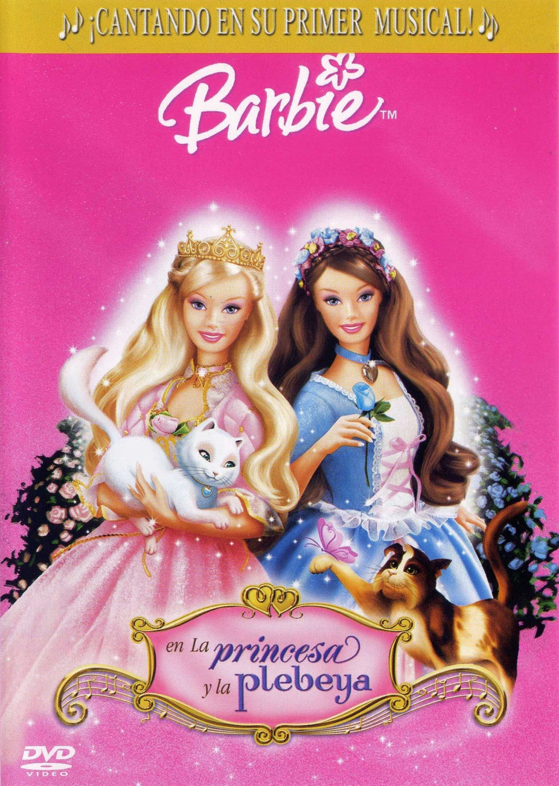
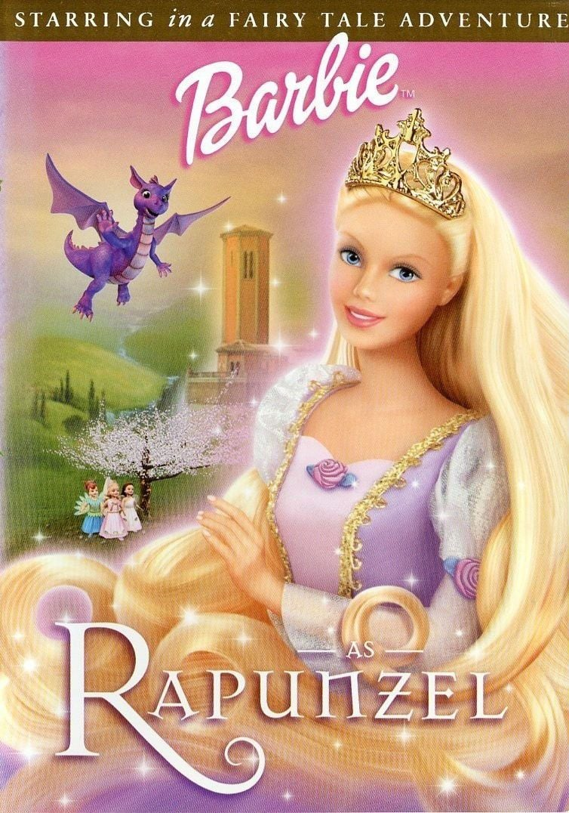
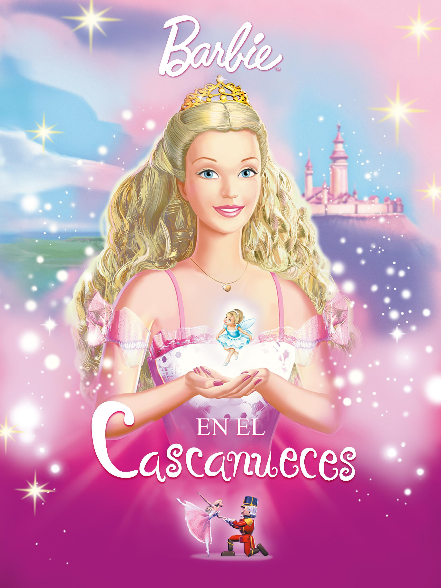
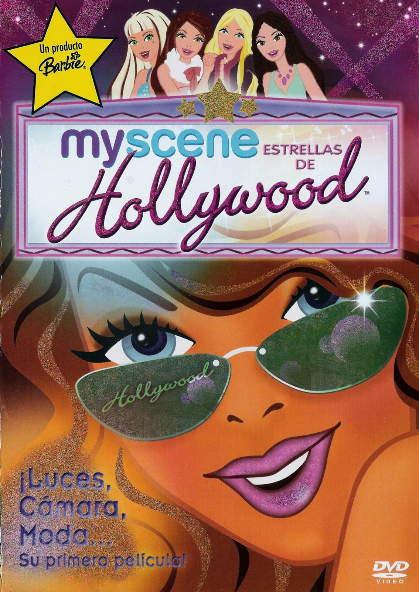
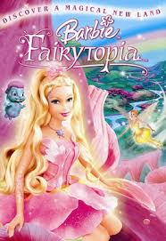
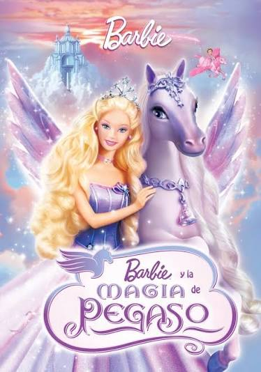

.png)

2004

2003

2002

2001

1987

1987

2005

2005

2005

2005

2006
2003
2002
2001
1987
Año: 2004
Donde ver: Barbie en la Princesa y la Plebeya
La princesa Anneliese y la costurera Erika descubren que son idénticas y terminan intercambiando sus lugares.
X
Año: 2003
Donde ver: Barbie en el Lago de los Cisnes
Odette se convierte en un cisne debido a un hechizo y debe encontrar una manera de romper la maldición.
XAño: 2002
Donde ver: Barbie en Rapunzel
Rapunzel vive encerrada en una torre hasta que descubre un pincel mágico que puede ayudarla a cambiar su destino.
XAño: 2001
Donde ver: Barbie en Cascanueces
Clara entra en un mundo mágico junto al Cascanueces y comienza una aventura para salvar el reino.
X
Año: 1987
Donde ver: Barbie and The Rockers
00:00-24:34 Barbie y su banda viajan al espacio para realizar un concierto.
X
Año: 1987
Donde ver: Barbie de regreso a la tierra
24:35-46:11 Barbie y The Sensations regresan a la Tierra después de su aventura musical.
XAño: 2005
Donde ver: Estrellas de Hollywood
Barbie y sus amigas consiguen por accidente un trabajo como extras en una gran producción cinematográfica de Hollywood en Nueva York.
XAño: 2005
Donde ver: Barbie en Fairytopia
Sigue la historia de Elina, una hada de las flores sin alas que vive en el mágico mundo de Fairytopia.
X
Año: 2005
Donde ver: El Diario de Barbie
Recibe un diario especial y una pulsera que parecen hacer realidad sus deseos y cambiar su suerte.
XAño: 2005
Donde ver: Barbie y la Magia del Pegaso
La historia de la princesa Annika, quien debe salvar a su familia y a su reino de un malvado hechicero en un plazo de tres días
X
Año: 2006
Donde ver: Barbie Fairytopia en Mermaidia
El hada Elina viaja al reino submarino de Mermaidia para rescatar al príncipe sireno Nalu.
X
Año: 2003
Donde ver: Barbie en el Lago de los Cisnes
Odette se convierte en un cisne debido a un hechizo y debe encontrar una manera de romper la maldición.
XAño: 2002
Donde ver: Barbie en Rapunzel
Rapunzel vive encerrada en una torre hasta que descubre un pincel mágico que puede ayudarla a cambiar su destino.
XAño: 2001
Donde ver: Barbie en Cascanueces
Clara entra en un mundo mágico junto al Cascanueces y comienza una aventura para salvar el reino.
X
Año: 1987
Donde ver: Barbie and The Rockers
00:00-24:34 Barbie y su banda viajan al espacio para realizar un concierto.
X